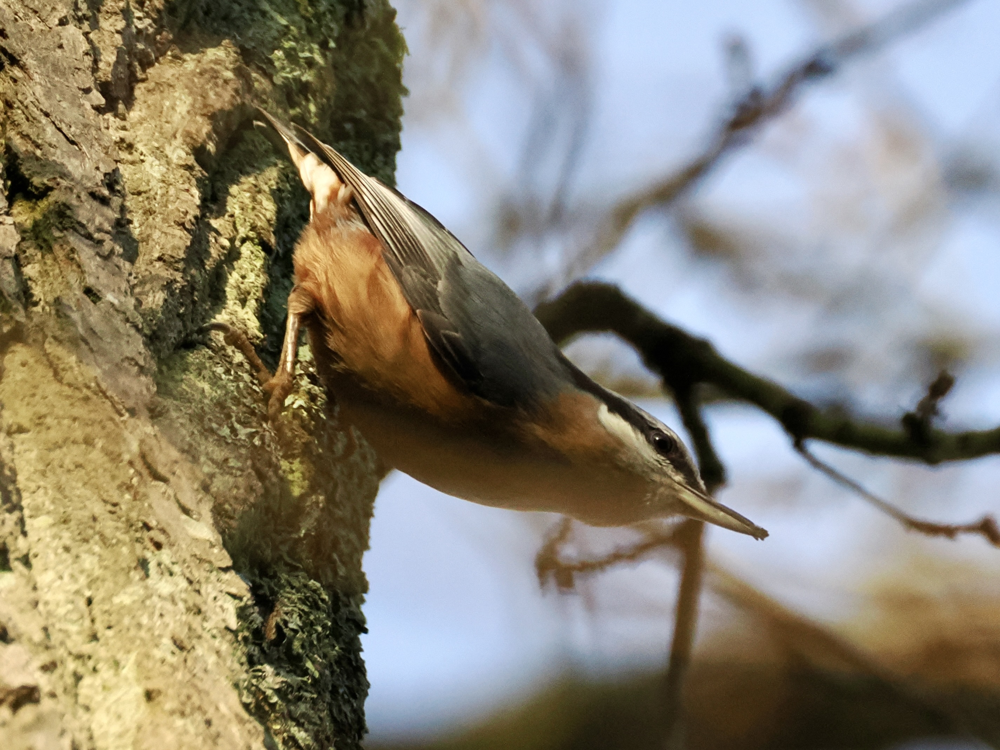

Eurasian Nuthatch
Sitta europaea
Order: Passeriformes
Family: Sittidae

A small tit-sized bird. Back is mostly grey, belly orange. Black eye-stripe. Beak is a unique shape, somehow like Great Spotted Woodpecker's miniaturised. Goes up and down trees. This image shows a very typical and exclusively nuthatch pose, in which the bird faces head-first down a tree, and raises its head as if to monitor the area. What does it mean to "hatch" a nut, you say? Nuthatches are known to put nuts into tree crevices and hack at them with their beaks, I suppose that's why.